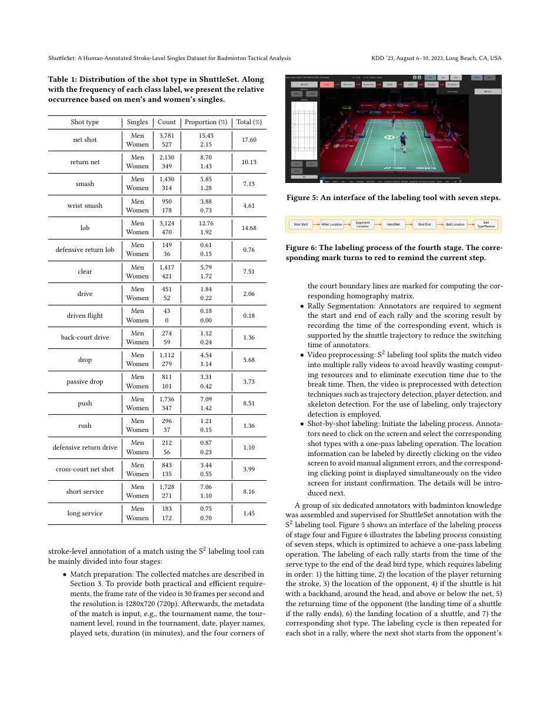
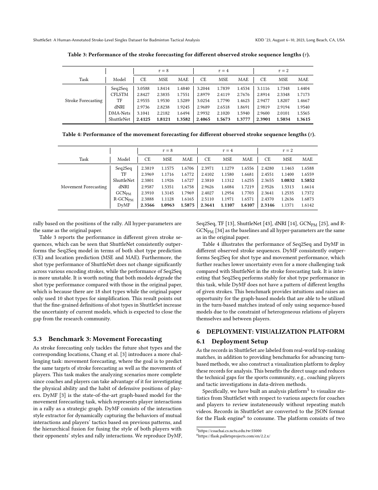
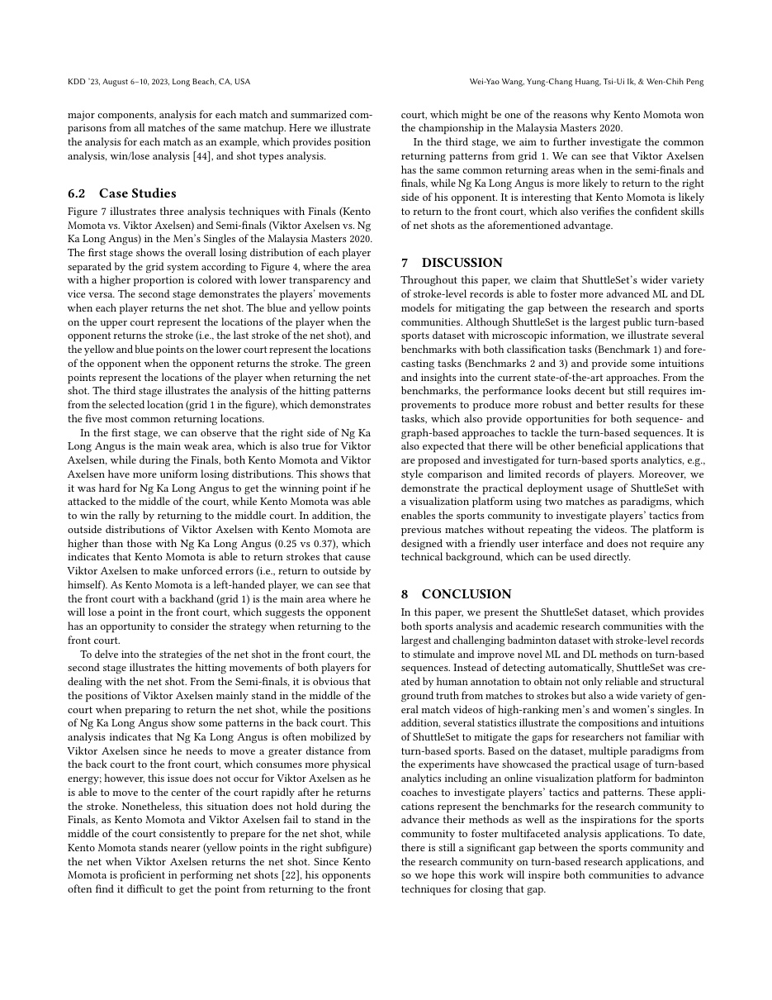

一句话结论
ShuttleSet 把羽毛球 tactical analysis 的基础单位推进到 stroke-level record：它提供 44 场顶级单打比赛、104 sets、3,685 rallies、36,492 strokes，并标注击球类型、击球位置、双方球员位置和 rally 结构。
论文定位
这篇论文是 sources/2026-05-16-bst-badminton-stroke-type-transformer 与 sources/2026-05-16-tempose-badminton-fine-grained-motion 的数据底座。TrackNet 系列让系统能追踪 shuttle，ShuttleSet 则给出 stroke-level 标签和战术分析结构，让模型可以学习击球类别、落点、移动预测和战术偏好。
问题定义
羽毛球这类 turn-based sport 的难点在于：比赛视频里有球路、球员、场地、击球时刻和战术选择，但公开数据常停留在视频或粗粒度事件层。ShuttleSet 的目标是把比赛拆成从 match → set → rally → stroke 的显式结构，让每一次击球都成为可训练、可预测、可解释的记录。
数据与标注结构
- 规模：44 matches、104 sets、3,685 rallies、36,492 strokes，覆盖 2018–2021 年 27 位高排名男女单打选手。
- 标签：18 类 shot type，包含 net shot、return net、smash、wrist smash、lob、clear、drive、drop、push、rush、serve 等。
- 空间字段：击球位置、双方球员位置、court grid 映射。
- 时间字段：hitting time、hit frame、rally 起止。
- 标注工具：S2 labeling tool 先做 match preparation / rally segmentation / video preprocessing，再执行一遍式 shot-by-shot labeling，并用随机抽样做质量检查。
关键图示

p5 同时展示 shot type distribution 和 S2 标注工具。它说明 ShuttleSet 的核心资产是结构化击球记录。

p7 展示 stroke forecasting 与 movement forecasting 结果。ShuttleNet 在 stroke forecasting 中稳定优于 Seq2Seq 等模型，DyMF 在 movement forecasting 中体现 player interaction graph 的价值。

p8 的可视化平台 case study 把 net shot、失分区域、站位和回球位置连到教练可读的战术分析。
核心实验与 benchmark
| Benchmark | 任务 | 代表结论 |
|---|---|---|
| Shot influence | 给定 stroke-level 信息预测 rally 最终胜负概率 | ShuttleScorer 在 AUC / ACC / Brier score 上优于 Bi-GRU，说明字段能支撑胜率建模 |
| Stroke forecasting | 给定前 8 / 4 / 2 拍预测未来 shot type 与位置 | ShuttleNet 在 CE、MSE、MAE 上稳定强于 Seq2Seq；18 类细粒度 shot type 提高了任务难度 |
| Movement forecasting | 同时预测未来 shot 和双方移动 | DyMF 在多种观察长度下表现强，说明动态交互图对站位和回位建模有价值 |
对当前 wiki 判断的影响
ShuttleSet 让 topics/sports-ai-video-understanding 的羽毛球线具备“从感知到战术”的数据桥：TrackNet / MonoTrack 给球路，ShuttleSet 给结构化击球记录，TemPose / BST 给动作语义，下游可以进入战术推荐或动作纠正。
对于 questions/question-badminton-stroke-correction-demo，ShuttleSet 直接支持三个设计：第一版 stroke type 可以从高频类别压缩开始；标注窗口应围绕 hit frame；输出应保留球路、球员位置和动作阶段。
局限或疑问
- 数据主要来自顶级单打转播，双打、青训、业余、训练场和多机位场景仍需要补充。
- 18 类 shot type 对模型已有挑战，demo 首版应先收缩类别空间。
- 数据依赖专业标注，后续研究可优先做半自动标注、主动学习和人工复核 UI。
原始材料
raw/ingest/2026-05-16-shuttleset-stroke-level-badminton-dataset/paper.pdfraw/ingest/2026-05-16-shuttleset-stroke-level-badminton-dataset/paper-text.mdraw/ingest/2026-05-16-shuttleset-stroke-level-badminton-dataset/analysis.mdraw/ingest/2026-05-16-shuttleset-stroke-level-badminton-dataset/page-previews-contact-sheet.pngraw/ingest/2026-05-16-shuttleset-stroke-level-badminton-dataset/abstract.mdraw/ingest/2026-05-16-shuttleset-stroke-level-badminton-dataset/links.yaml
相关页面
- sources/2026-05-16-bst-badminton-stroke-type-transformer
- sources/2026-05-16-tempose-badminton-fine-grained-motion
- sources/2026-05-05-tracknet-high-speed-tiny-objects
- sources/2026-04-25-tracknetv3
- topics/sports-ai-video-understanding
- topics/sports-ai-roadmap
- questions/question-badminton-stroke-correction-demo